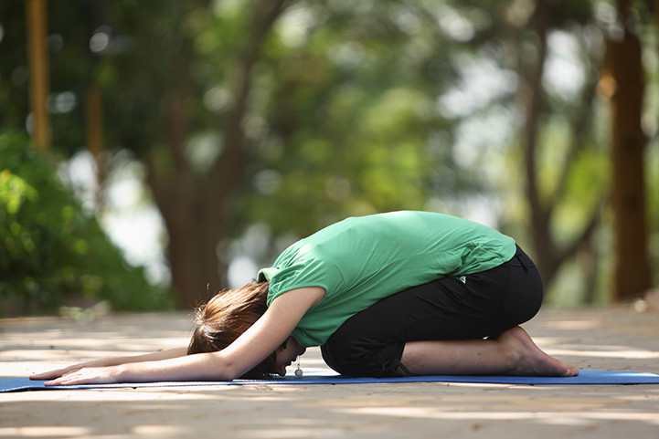
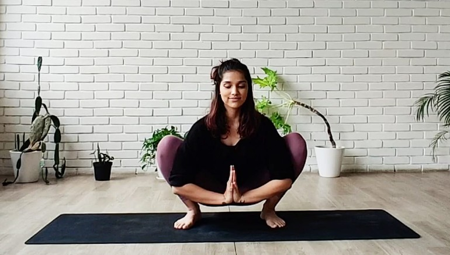
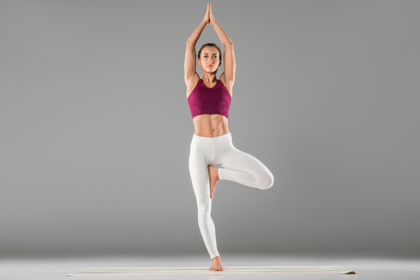
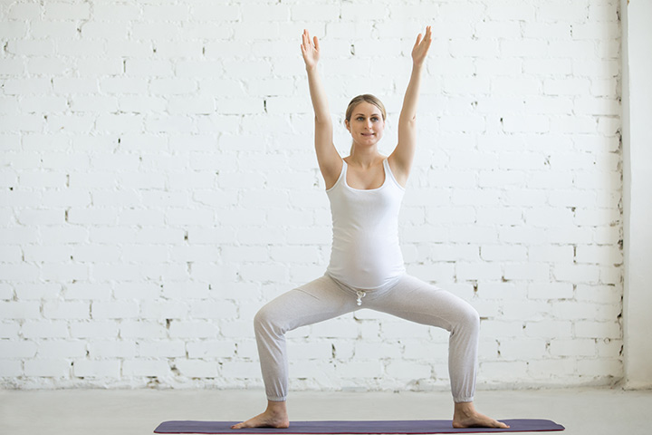
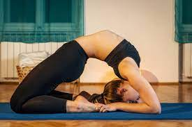
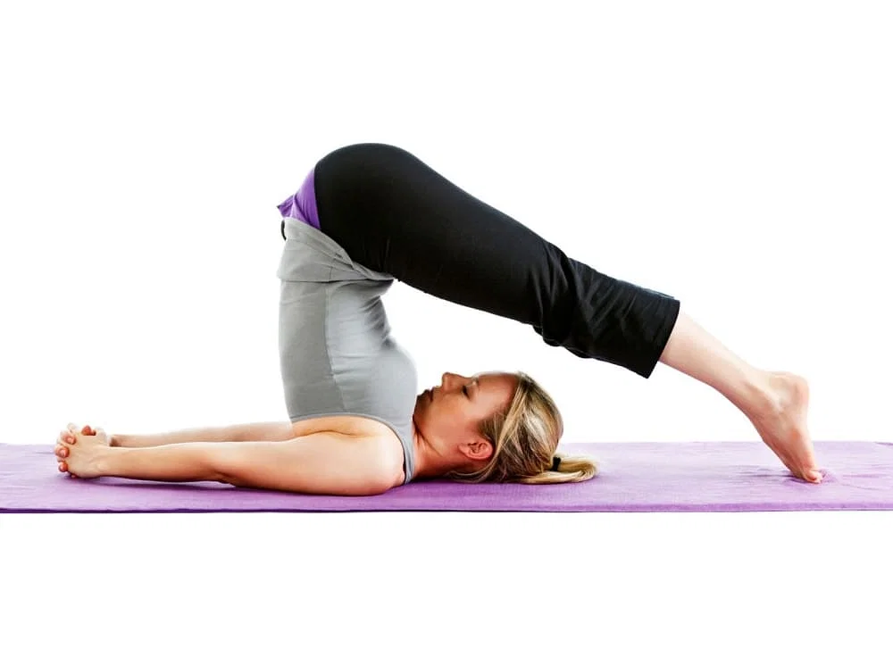
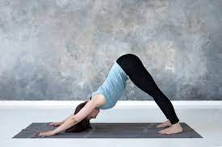

योग महिलाओं के लिए
जबकि योग उम्र और लिंग की परवाह किए बिना हर किसी की मदद कर सकता है, योग उन महिलाओं के लिए विशेष रूप से सहायक हो सकता है जिन्हें कई स्वास्थ्य समस्याएं होती हैं - हार्मोनल मुद्दों से लेकर विभिन्न दर्द और दर्द और गर्भावस्था के बाद की समस्याओं से लेकर तनाव तक। अधिक जानने के लिए पढ़े।
1. शिशुआसन
आसन करने का तरीका
- पंजों को एक साथ रखते हुए फर्श पर घुटने टेकें।
- श्वास लें और आगे की ओर झुकें और अपने धड़ को जाँघों के बीच और चेहरे को ज़मीन पर रखें।
- आराम महसूस करने के लिए अपने हाथों को जमीन पर दबाएं और अपने शरीर के सभी हिस्सों को मुक्त कर लें।
आसन के फ़ायदे
तनाव और चिंता को ठीक करने में मदद करता है पीठ की मांसपेशियों को मजबूत करने और बेहतर मुद्रा देने में मदद करता है।2. मालासन
आसन करने का तरीका
- पैरों को थोड़ा चौड़ा करके चटाई पर खड़े हो जाएं।
- बैठने की स्थिति में अपने घुटनों को धीरे-धीरे मोड़ें।
- नमस्कार मुद्रा में हथेलियों को जोड़ने के लिए अपने हाथों को एक साथ लाएँ, अपनी कोहनियों से आंतरिक घुटनों को धीरे से दबाकर इसे चौड़ा करें।
- अपने कूल्हों को थोड़ा नीचे लाएँ लेकिन सुनिश्चित करें कि आपकी रीढ़ लम्बी हो और छाती खुली हो।
आसन के फ़ायदे
यह मासिक धर्म चक्र को नियमित करने में मदद करता है। यह जांघ और गर्दन क्षेत्र से तनाव दूर करने के लिए अच्छा है। यह जांघ और कमर की मांसपेशियों को मजबूत बनाता है।3. वृक्षासन
आसन करने का तरीका
- इस आसन का अभ्यास एक पैर पर और दूसरे पैर को जांघ पर रखकर किया जाता है।
- अपने आप को एक पैर पर स्थिर रखें और अपनी हथेलियों को छाती के पास जोड़कर आंखें बंद करके परम ईश्वर का स्मरण करें।
- सुनिश्चित करें कि सिर से पैर तक शरीर एक सीधी रेखा में हो।
आसन के फ़ायदे
स्वस्थ और मजबूत पैर, सपाट पेट और सुडौल भुजाएँ पाने में मदद करता है। शरीर के संतुलन और मानसिक फोकस को बेहतर बनाने में मदद करता है। मन और शरीर में आत्मविश्वास और आंतरिक विश्वास जोड़ता है।4. उत्कट कोणासन
आसन करने का तरीका
- अपने पैरों को अलग करके खड़े हो जाएं
- अब अपने दोनों हाथों को सीधा और फैलाकर ऊपर रखते हुए बैठ जाएं।
आसन के फ़ायदे
यह गर्भवती महिलाओं के लिए अच्छा है क्योंकि यह शरीर को प्रसव के लिए तैयार करता है। आसन करते समय पेल्विक मांसपेशियों में खिंचाव होता है और वे प्रसव को अधिक कुशलता से संभालने के लिए मजबूत भी हो जाती हैं। यह मुद्रा मानसिक, शारीरिक और आध्यात्मिक पूर्णता के स्तर तक पहुंचने में मदद करती है।5. नवासना

आसन करने का तरीका
- अपने पैरों और ऊपरी शरीर के बीच समकोण बनाते हुए अपने नितंबों पर बैठें।
- सुनिश्चित करें कि इस स्थिति में शरीर संतुलित हो, जबकि आपके पैर हवा में हों।
आसन के फ़ायदे
यह आसन पीसीओएस से पीड़ित महिलाओं के लिए मददगार है। ऐसा इसलिए है क्योंकि यह थायरॉयड ग्रंथि सहित शरीर के विभिन्न हिस्सों को मजबूत करने में मदद करता है, जिससे टीएसएच स्राव नियंत्रित होता है। इससे पीसीओएस के लक्षणों में राहत मिलती है। पेट और जांघ की मांसपेशियों को तुरंत टोन करने में मदद करता है जांघ की हड्डियों और रीढ़ की हड्डी को लंबा करने के सर्वोत्तम तरीकों में से एक6. कपोतासन
आसन करने का तरीका
- अपने पैरों को पूरी तरह से ज़मीन के संपर्क में रखते हुए घुटनों के बल बैठकर शुरुआत करें।
- कोहनी को चटाई से छूने के लिए अपने शरीर को थोड़ा पीछे की ओर झुकाएं।
- अपने हाथों से पंजों को पकड़ें और सिर को हाथों के बीच जमीन पर रखें। इससे मिलने वाली अपार शांति का अनुभव करने के लिए कुछ मिनट तक इसी स्थिति में रहे
आसन के फ़ायदे
रीढ़, मस्तिष्क और शरीर की नसों में तनाव को दूर करने में मदद करता है। महिलाओं को आराम करने में मदद करता है जिससे उन्हें बेहतर नींद आती है। इससे अनिद्रा को दूर करने में मदद मिलती है। पेट की मांसपेशियों को टोन करता है और पाचन अंगों को पोषण देता है7. हलासन
आसन करने का तरीका
- शरीर के सभी अंगों को मुक्त करके चटाई पर लेट जाएं।
- अपने पैरों को उठाएं और उन्हें थोड़ा हवा में ऊपर उठाएं।
- अपने हाथों की मदद से, अपने पैरों की उंगलियों को सिर के पीछे लाने के लिए अपनी पीठ को धक्का दें, केवल कंधे, गर्दन और सिर जमीन पर रखें।
- अपनी भुजाओं को हरकत में लाते हुए, चटाई पर मजबूती से दबाने के लिए हाथों को पकड़ लें।
आसन के फ़ायदे
यह चेहरे की त्वचा को चमकदार और कसावदार बनाने में मदद करता है पाचन तंत्र के सुचारू कामकाज में मदद करता है जिसके परिणामस्वरूप उचित वजन बनाए रखने में मदद मिलती है। यह चयापचय की स्वस्थ दर को भी बनाए रखता है।8. अधो मुख संवासन
आसन करने का तरीका
- अपने कंधों को अपने हाथों के ऊपर रखते हुए, कोर को संलग्न करते हुए, पैरों को कूल्हे की चौड़ाई से अलग रखते हुए और पैर की उंगलियों को मोड़कर एक तख्ती में शुरुआत करें।
- कंधों से एड़ी तक एक सीधी रेखा बनाने के लिए कूल्हों को ऊपर उठाएं।
- अपने शरीर को पिरामिड आकार देने के लिए अपने कूल्हों को पीछे और ऊपर उठाएं। हाथों से कूल्हों तक एक सीधी रेखा बनाने पर ध्यान दें।
- अपने पैरों की ओर पीछे देखने के लिए अपनी गर्दन को आराम दें।
- पिंडलियों को फैलाने के लिए एड़ियों को फर्श की ओर छोड़ें।
- आसन को बनाए रखें, जैसे-जैसे आप लंबे होते हैं और उठते हैं, सांस लेते हैं, और जब आप खिंचाव को गहरा करते हैं और जुड़ाव बढ़ाते हैं तो सांस छोड़ते हैं।